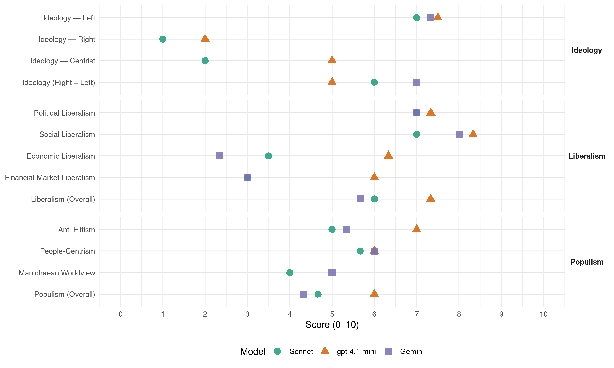

AKEL (Cyprus, 2006)
manifesto_id 55321_200605
Get full text: This site shows derived annotations and short verbatim quotes only. The full manifesto text is © Manifesto Project / WZB — obtain it via manifesto-project.wzb.eu using the manifesto_id above.
Headline scores
| Dimension | Sonnet | gpt-4.1-mini | Gemini |
|---|---|---|---|
| Populism (Overall) | 4.7 | 6.0 | 4.3 |
| Anti-Elitism | 5.0 | 7.0 | 5.3 |
| People-Centrism | 5.7 | 6.0 | 6.0 |
| Manichaean Worldview | 4.0 | – | 5.0 |
| Ideology (Right − Left) | 6.0 | 5.0 | 7.0 |
| Liberalism (Overall) | 6.0 | 7.3 | 5.7 |
| Political Liberalism | 7.0 | 7.3 | 7.0 |
| Social Liberalism | 7.0 | 8.3 | 8.0 |
| Economic Liberalism | 3.5 | 6.3 | 2.3 |
| Financial-Market Liberalism | 3.0 | 6.0 | 3.0 |
Evidence per dimension
Economic Liberalism
Gemini · score 2.0 · verified · chunk 1
“απορρίπτει τη νεοφιλελεύθερη προσέγγιση”
Το ΑΚΕΛ Αριστερά Νέες Δυνάμεις απορρίπτει τη νεοφιλελεύθερη προσέγγιση που ταυτίζει τον εκσυγχρονισμό
Gemini · score 3.0 · verified · chunk 2
“ελεύθερη αγορά δεν σημαίνει και ασυδοσία”
Για το ΑΚΕΛ Αριστερά Νέες Δυνάμεις ελεύθερη αγορά δεν σημαίνει και ασυδοσία της αγοράς.
Gemini · score 2.0 · verified · chunk 3
“δημόσια δωρεάν εκπαίδευση σε όλες”
βασικό κοινωνικό αγαθό το οποίο πρέπει να διασφαλίζεται, με τη δημόσια δωρεάν εκπαίδευση σε όλες τις βαθμίδες
gpt-4.1-mini · score 6.0 · verified · chunk 1
“Η Κυπριακή Οικονομία με τις δικές της ιδιαιτερότητες αναπτύσσεται πλέον στο περιβάλλον της Ευρώπης και της Παγκοσμιοποίησης”
Η Κυπριακή Οικονομία με τις δικές της ιδιαιτερότητες αναπτύσσεται πλέον στο περιβάλλον της Ευρώπης και της Παγκοσμιοποίησης. Μιας παγκοσμιοποίησης η οποία επιχειρεί να επιβάλει ως πρότυπο μοντέλο κοινωνικο-οικονομικής ανάπτυξης το «νεοφιλελεύθερο» νέο-συντηρητικό, καπιταλιστικό μοντέλο ανάπτυξης.
gpt-4.1-mini · score 6.0 · verified · chunk 2
“Το ΑΚΕΛ, ως μια βασική συνιστώσα της Κυβέρνησης της ΑΛΛΑΓΗΣ, ήταν ένας βασικός διαμορφωτής του αγροτικού προγράμματος της”
Το ΑΚΕΛ, ως μια βασική συνιστώσα της Κυβέρνησης της ΑΛΛΑΓΗΣ, ήταν ένας βασικός διαμορφωτής του αγροτικού προγράμματος της, που στοχεύει στην επίλυση διαρθρωτικών και χωροταξικών προβλημάτων του ευρύτερου γεωργικού τομέα, στη δημιουργία προϋποθέσεων αειφόρου ανάπτυξης της υπαίθρου.
gpt-4.1-mini · score 7.0 · verified · chunk 3
“ανοικτός, δομημένος, κοινωνικός διάλογος για την υλοποίηση της εκπαιδευτικής μεταρρύθμισης”
Σήμερα διεξάγεται ένας ανοικτός, δομημένος, κοινωνικός διάλογος για την υλοποίηση της εκπαιδευτικής μεταρρύθμισης, μέσω του Συμβουλίου Παιδείας, του Συμβουλίου Δημοτικής και Μέσης και του Συμβουλίου Ανώτατης Εκπαίδευσης, που για πρώτη φορά θεσμοθετήθηκαν.
Sonnet · score 3.0 · verified · chunk 1
“απορρίπτει τη νεοφιλελεύθερη προσέγγιση”
Το ΑΚΕΛ Αριστερά Νέες Δυνάμεις απορρίπτει τη νεοφιλελεύθερη προσέγγιση που ταυτίζει τον εκσυγχρονισμό με την αποδυνάμωση του κοινωνικού ρόλου του κράτους
Sonnet · score 4.0 · mixed · chunk 2
“ελεύθερη αγορά δεν σημαίνει και ασυδοσία”
Για το ΑΚΕΛ Αριστερά Νέες Δυνάμεις ελεύθερη αγορά δεν σημαίνει και ασυδοσία της αγοράς. Μπορούν να γίνουν περισσότερα και θα εργαστούμε για να θωρακίσουμε πιο αποτελεσματικά τον καταναλωτή
Sonnet · score 4.0 · verified · chunk 3
“δημόσιος τομέας πρέπει να παραμείνει η ραχοκοκαλιά”
Ο δημόσιος τομέας πρέπει να παραμείνει η ραχοκοκαλιά του συστήματος Υγείας στην Κύπρο.
Financial-Market Liberalism
Gemini · score 3.0 · verified · chunk 2
“αντίποδας του ιδιωτικού τραπεζιτικού κεφαλαίου”
Να συνεχίσει τις δραστηριότητες του ως αντίποδας του ιδιωτικού τραπεζιτικού κεφαλαίου,
gpt-4.1-mini · score 5.0 · verified · chunk 2
“Ο Συνεργατισμός κατέχει νευραλγική θέση στα χρηματο-πιστωτικά δρώμενα της Κύπρου και με τις παρεμβάσεις και τη δραστηριότητα του προσφέρει εναλλακτικές λύσεις”
Ο Συνεργατισμός κατέχει νευραλγική θέση στα χρηματο-πιστωτικά δρώμενα της Κύπρου και με τις παρεμβάσεις και τη δραστηριότητα του προσφέρει εναλλακτικές λύσεις και υπηρεσίες στον κύπριο πολίτη. Στόχος μας είναι η περιφρούρηση, ενίσχυση και ενδυνάμωση αυτής της σημαντικής κατάκτησης του κυπριακού λαού.
gpt-4.1-mini · score 7.0 · verified · chunk 3
“Νέα Νοσοκομεία Λευκωσίας και Ελεύθερης Αμμοχώστου”
Συμπληρώθηκε η κτιριακή υποδομή με την αποπεράτωση της ανέγερσης των Νέων Νοσοκομείων Λευκωσίας και Ελεύθερης Αμμοχώστου. Εφαρμόστηκε η νέα ριζοσπαστική τιμολογιακή πολιτική για τα φάρμακα που οδήγησε σε σημαντική μείωση των τιμών των φαρμάκων.
Sonnet · score 3.0 · verified · chunk 1
“τις τράπεζες και τα συνεργατικά ιδρύματα”
Ιδιαίτερη προετοιμασία απαιτείται από τις τράπεζες και τα συνεργατικά ιδρύματα.
Sonnet · score 3.0 · verified · chunk 2
“αντίποδας του ιδιωτικού τραπεζιτικού κεφαλαίου”
Να συνεχίσει τις δραστηριότητες του ως αντίποδας του ιδιωτικού τραπεζιτικού κεφαλαίου, Να αναβαθμίζει συνεχώς τις προσφερόμενες υπηρεσίες του
Political Liberalism
Gemini · score 7.0 · verified · chunk 1
“αγώνες του λαού μας για ελευθερία, για δημοκρατία”
σε όλους τους αγώνες του λαού μας για ελευθερία, για δημοκρατία, για υπεράσπιση της ανεξαρτησίας
Gemini · score 7.0 · verified · chunk 2
“για μια δημοκρατική και ανθρώπινη Παιδεία”
ΠΑΙΔΕΙΑ Για μια δημοκρατική και ανθρώπινη Παιδεία Η Παιδεία αποτελεί για το ΑΚΕΛ
Gemini · score 7.0 · verified · chunk 3
“δημοκρατικό σχολείο του πολίτη”
Μεταμόρφωση του Κυπριακού σχολείου σε δημοκρατικό σχολείο του πολίτη. Αύξηση των δημόσιων δαπανών
gpt-4.1-mini · score 7.0 · verified · chunk 1
“Η πάλη για ελευθερία, για δημοκρατία, για υπεράσπιση της ανεξαρτησίας της Κύπρου”
Γιατί το ΑΚΕΛ είναι εκείνη η πατριωτική δύναμη, που σε όλους τους αγώνες του λαού μας για ελευθερία, για δημοκρατία, για υπεράσπιση της ανεξαρτησίας της Κύπρου, για απαλλαγή από την κατοχή και επανένωση της πατρίδας μας βρέθηκε και βρίσκεται πάντα στην πρώτη γραμμή.
gpt-4.1-mini · score 7.0 · verified · chunk 2
“Η θεσμική πλέον εκπροσώπηση του Οργανισμού Νεολαίας Κύπρου (ΟΝΕΚ), της Παγκύπριας Ομοσπονδίας Φοιτητικών Ενώσεων (ΠΟΦΕΝ), της Παγκύπριας Συντονιστικής Επιτροπής Μαθητών (ΠΣΕΜ) και γενικά του οργανωμένου νεολαιίστικου κινήματος σε διάφορες μόνιμες ή ad – hoc επιτροπές είναι πλέον μια αναντίλεκτη πραγματικότητα”
Η θεσμική πλέον εκπροσώπηση του Οργανισμού Νεολαίας Κύπρου (ΟΝΕΚ), της Παγκύπριας Ομοσπονδίας Φοιτητικών Ενώσεων (ΠΟΦΕΝ), της Παγκύπριας Συντονιστικής Επιτροπής Μαθητών (ΠΣΕΜ) και γενικά του οργανωμένου νεολαιίστικου κινήματος σε διάφορες μόνιμες ή ad – hoc επιτροπές είναι πλέον μια αναντίλεκτη πραγματικότητα. Στον τομέα της αξιοκρατίας έχει επίσης καταγραφεί σημαντική πρόοδος.
gpt-4.1-mini · score 8.0 · verified · chunk 3
“δημοκρατική και ανθρώπινη Παιδεία”
Η έκθεση της Επιτροπής των Ειδικών Πανεπιστημιακών για την εκπαιδευτική μεταρρύθμιση με στόχο μια «δημοκρατική και ανθρώπινη Παιδεία» αποτελεί το πρώτο βήμα για υλοποίηση της προγραμματικής διακήρυξης της κυβέρνησης για μια συνολική και σφαιρική μεταρρύθμιση της εκπαίδευσης.
Sonnet · score 7.0 · verified · chunk 1
“εκδημοκρατισμό και τον εκσυγχρονισμό της κυπριακής κοινωνίας”
Δεν υπάρχει άλλη πολιτική και κοινωνική δύναμη, που να έχει συντελέσει σε τέτοιο σημαντικό βαθμό στην κοινωνική πρόοδο, στον εκδημοκρατισμό και τον εκσυγχρονισμό της κυπριακής κοινωνίας.
Sonnet · score 7.0 · verified · chunk 2
“κατοχύρωση των συνδικαλιστικών ελευθεριών και δικαιωμάτων”
Συνεχή αναβάθμιση του κοινωνικού ρόλου της νέας γενιάς μέσα από: την ολόπλευρη ενίσχυση και στήριξη του ρόλου του ΟΝΕΚ την κατοχύρωση των συνδικαλιστικών ελευθεριών και δικαιωμάτων των φοιτητών και μαθητών
Sonnet · score 7.0 · verified · chunk 3
“δημοκρατική συμμετοχή με τη θεσμοθέτηση”
διευρύνουν τη δημοκρατική συμμετοχή με τη θεσμοθέτηση στο επίπεδο του σχολείου της σχολικής επιτροπής.
Liberalism (Overall)
Gemini · score 6.0 · verified · chunk 1
“αγώνες του λαού μας για ελευθερία, για δημοκρατία”
σε όλους τους αγώνες του λαού μας για ελευθερία, για δημοκρατία, για υπεράσπιση της ανεξαρτησίας
Gemini · score 5.0 · verified · chunk 2
“για την Ισότητα Ανδρών και Γυναικών”
για την Ασφάλεια και Υγεία, για την Ισότητα Ανδρών και Γυναικών, για τους εργαζόμενους
Gemini · score 6.0 · verified · chunk 3
“δημοκρατικό σχολείο του πολίτη”
Μεταμόρφωση του Κυπριακού σχολείου σε δημοκρατικό σχολείο του πολίτη. Αύξηση των δημόσιων δαπανών
gpt-4.1-mini · score 7.0 · verified · chunk 1
“Η πάλη για ελευθερία, για δημοκρατία, για υπεράσπιση της ανεξαρτησίας της Κύπρου”
Γιατί το ΑΚΕΛ είναι εκείνη η πατριωτική δύναμη, που σε όλους τους αγώνες του λαού μας για ελευθερία, για δημοκρατία, για υπεράσπιση της ανεξαρτησίας της Κύπρου, για απαλλαγή από την κατοχή και επανένωση της πατρίδας μας βρέθηκε και βρίσκεται πάντα στην πρώτη γραμμή.
gpt-4.1-mini · score 7.0 · verified · chunk 2
“Η θεσμική πλέον εκπροσώπηση του Οργανισμού Νεολαίας Κύπρου (ΟΝΕΚ), της Παγκύπριας Ομοσπονδίας Φοιτητικών Ενώσεων (ΠΟΦΕΝ), της Παγκύπριας Συντονιστικής Επιτροπής Μαθητών (ΠΣΕΜ) και γενικά του οργανωμένου νεολαιίστικου κινήματος”
Η θεσμική πλέον εκπροσώπηση του Οργανισμού Νεολαίας Κύπρου (ΟΝΕΚ), της Παγκύπριας Ομοσπονδίας Φοιτητικών Ενώσεων (ΠΟΦΕΝ), της Παγκύπριας Συντονιστικής Επιτροπής Μαθητών (ΠΣΕΜ) και γενικά του οργανωμένου νεολαιίστικου κινήματος σε διάφορες μόνιμες ή ad – hoc επιτροπές είναι πλέον μια αναντίλεκτη πραγματικότητα. Στον τομέα της αξιοκρατίας έχει επίσης καταγραφεί σημαντική πρόοδος.
gpt-4.1-mini · score 8.0 · verified · chunk 3
“δημοκρατική και ανθρώπινη Παιδεία”
Η έκθεση της Επιτροπής των Ειδικών Πανεπιστημιακών για την εκπαιδευτική μεταρρύθμιση με στόχο μια «δημοκρατική και ανθρώπινη Παιδεία» αποτελεί το πρώτο βήμα για υλοποίηση της προγραμματικής διακήρυξης της κυβέρνησης για μια συνολική και σφαιρική μεταρρύθμιση της εκπαίδευσης.
Sonnet · score 5.0 · mixed · chunk 1
“ρύθμιση της ανεξέλεγκτης λειτουργίας των νόμων της καπιταλιστικής αγοράς”
Στη ρύθμιση της ανεξέλεγκτης λειτουργίας των νόμων της καπιταλιστικής αγοράς κατά τρόπο που αυτή τους η δράση να μην αποβαίνει σε βάρος των οικονομικά ευάλωτων στρωμάτων
Sonnet · score 6.0 · verified · chunk 2
“δικαιώματα των γυναικών είναι αναπόσπαστο κομμάτι”
Το ΑΚΕΛ Αριστερά Νέες Δυνάμεις θεωρεί ότι τα δικαιώματα των γυναικών είναι αναπόσπαστο κομμάτι των ανθρωπίνων δικαιωμάτων
Sonnet · score 6.0 · verified · chunk 3
“δημοκρατική και ανθρώπινη Παιδεία”
Για μια δημοκρατική και ανθρώπινη Παιδεία — Η Παιδεία αποτελεί για το ΑΚΕΛ βασικό κοινωνικό αγαθό
Anti-Elitism
Gemini · score 6.0 · verified · chunk 1
“υπηρετεί τα συμφέροντα του μεγάλου κεφαλαίου”
Ο νεοφιλελευθερισμός υπηρετεί τα συμφέροντα του μεγάλου κεφαλαίου σε βάρος των εργαζομένων
Gemini · score 6.0 · verified · chunk 2
“δυνάμεις της δεξιάς και του κατεστημένου”
Οι δυνάμεις της δεξιάς και του κατεστημένου αντικρίζουν με εχθρότητα τα ιδιαίτερα
Gemini · score 4.0 · verified · chunk 3
“δεκάχρονης διακυβέρνησης από τον ΔΗΣΥ”
Ως αποτέλεσμα της δεκάχρονης διακυβέρνησης από τον ΔΗΣΥ, στο κυπριακό εκπαιδευτικό σύστημα είχαν συσσωρευτεί επικίνδυνα αδιέξοδα.
gpt-4.1-mini · score 7.0 · verified · chunk 1
“Ο νεοφιλελευθερισμός υπηρετεί τα συμφέροντα του μεγάλου κεφαλαίου”
Ο νεοφιλελευθερισμός επελαύνει κατά των συμφερόντων των εργαζομένων στην Ευρώπη και τον κόσμο, υποσκάπτοντας τα δικαιώματα τους και καταστρατηγώντας κατακτήσεις οι οποίες επετεύχθησαν με πολύχρονους γεμάτους θυσίες αγώνες. Ο νεοφιλελευθερισμός υπηρετεί τα συμφέροντα του μεγάλου κεφαλαίου σε βάρος των εργαζομένων, των μεσαίων στρωμάτων και του κράτους πρόνοιας.
gpt-4.1-mini · score 5.0 · mixed · chunk 2
“Τα μεσαία στρώματα αντιμετωπίζουν σήμερα την πίεση και τον ανταγωνισμό του μεγάλου κεφάλαιου”
Τα μεσαία στρώματα αντιμετωπίζουν σήμερα την πίεση και τον ανταγωνισμό του μεγάλου κεφάλαιου όσο ποτέ προηγουμένως. Η παγκοσμιοποίηση της οικονομίας όπως σχεδιάζεται και διαμορφώνεται από την ομάδα των πλούσιων χωρών και η νεοφιλελεύθερη πολιτική της Ευρωπαϊκής Ένωσης βοηθά το μεγάλο κεφάλαιο.
Sonnet · score 6.0 · verified · chunk 1
“υπηρετεί τα συμφέροντα του μεγάλου κεφαλαίου”
Ο νεοφιλελευθερισμός υπηρετεί τα συμφέροντα του μεγάλου κεφαλαίου σε βάρος των εργαζομένων, των μεσαίων στρωμάτων και του κράτους πρόνοιας.
Sonnet · score 6.0 · verified · chunk 2
“κοινούς αγώνες ενάντια στο μεγάλο κεφάλαιο”
ΜΕΣΑΙΑ ΣΤΡΩΜΑΤΑ Κοινοί αγώνες ενάντια στο μεγάλο κεφάλαιο Τα μεσαία στρώματα αντιμετωπίζουν σήμερα την πίεση και τον ανταγωνισμό του μεγάλου κεφαλαίου
Sonnet · score 3.0 · verified · chunk 3
“κλειστά κυκλώματα και το παρασκήνιο”
Φαινόμενα όπως τα κλειστά κυκλώματα και το παρασκήνιο εξακολουθούν να λειτουργούν στη βάση κομματικών, οικονομικών και προσωπικών συμφερόντων
Ideology — Centrist
gpt-4.1-mini · score 6.0 · verified · chunk 1
“Το ΑΚΕΛ Αριστερά Νέες Δυνάμεις προσφέρει βήμα και έπαλξη αγώνα σε προσωπικότητες και δυνάμεις του ευρύτερου δημοκρατικού χώρου”
Γιατί το ΑΚΕΛ Αριστερά Νέες Δυνάμεις προσφέρει βήμα και έπαλξη αγώνα σε προσωπικότητες και δυνάμεις του ευρύτερου δημοκρατικού χώρου συνεργαζόμενο μαζί τους με συνέπεια, σεβασμό και ειλικρίνεια.
gpt-4.1-mini · score 4.0 · verified · chunk 2
“Η ταύτιση σε μεγάλο βαθμό των συμφερόντων των εργαζομένων με τα μεσαία στρώματα επιτρέπει τη διαμόρφωση κοινών στόχων”
Η ταύτιση σε μεγάλο βαθμό των συμφερόντων των εργαζομένων με τα μεσαία στρώματα επιτρέπει τη διαμόρφωση κοινών στόχων και τη διεξαγωγή κοινών αγώνων για την διεκδίκηση των δικαιωμάτων και των συμφερόντων των μικρομεσαίων επιχειρήσεων.
Sonnet · score 2.0 · verified · chunk 1
“ευρύτερου δημοκρατικού χώρου”
προσφέρει βήμα και έπαλξη αγώνα σε προσωπικότητες και δυνάμεις του ευρύτερου δημοκρατικού χώρου
Sonnet · score 2.0 · verified · chunk 2
“κυβέρνηση της ΑΛΛΑΓΗΣ”
Το ΑΚΕΛ, ως μια βασική συνιστώσα της Κυβέρνησης της ΑΛΛΑΓΗΣ, ήταν ένας βασικός διαμορφωτής του αγροτικού προγράμματος της
Sonnet · score 2.0 · verified · chunk 3
“άμεση συμμετοχή του λαού στη διαχείριση”
αλλά και την άμεση συμμετοχή του λαού στη διαχείριση των τοπικών υποθέσεων με νέες μορφές και διαδικασίες.
Ideology — Left
Gemini · score 8.0 · verified · chunk 1
“υπερασπιστής των συμφερόντων και των δικαίων των εργαζομένων”
θα εξακολουθήσει να είναι ο υπερασπιστής των συμφερόντων και των δικαίων των εργαζομένων, των μεσαίων στρωμάτων
Gemini · score 8.0 · verified · chunk 2
“αγώνες ενάντια στο μεγάλο κεφάλαιο”
ΜΕΣΑΙΑ ΣΤΡΩΜΑΤΑ Κοινοί αγώνες ενάντια στο μεγάλο κεφάλαιο Τα μεσαία στρώματα αντιμετωπίζουν
Gemini · score 6.0 · verified · chunk 3
“απομυζώντας το βαλάντιο των εργαζομένων”
καρκίνωμα που μεταφέρει το κέντρο βάρους της μάθησης από το σχολείο στο φροντιστήριο, απομυζώντας το βαλάντιο των εργαζομένων γονιών και
gpt-4.1-mini · score 8.0 · verified · chunk 1
“Το ΑΚΕΛ Αριστερά Νέες Δυνάμεις είναι ο υπερασπιστής των συμφερόντων και των δικαίων των εργαζομένων”
Γιατί το ΑΚΕΛ Αριστερά Νέες Δυνάμεις ήταν, είναι και θα εξακολουθήσει να είναι ο υπερασπιστής των συμφερόντων και των δικαίων των εργαζομένων, των μεσαίων στρωμάτων, της αγροτιάς, των πνευματικών ανθρώπων και γενικά του λαού.
gpt-4.1-mini · score 7.0 · verified · chunk 2
“Το ΑΚΕΛ Αριστερά Νέες Δυνάμεις θα συνεχίσει να αγωνίζεται για την υπεράσπιση και την προώθηση των συμφερόντων των μικρομεσαίων επιχειρήσεων απέναντι στην πίεση που δέχονται από το μεγάλο κεφάλαιο”
Το ΑΚΕΛ Αριστερά Νέες Δυνάμεις θα συνεχίσει να αγωνίζεται για την υπεράσπιση και την προώθηση των συμφερόντων των μικρομεσαίων επιχειρήσεων απέναντι στην πίεση που δέχονται από το μεγάλο κεφάλαιο. Πιο συγκεκριμένα θα αγωνιστούμε Για να υπάρξει επαρκής νομική ρύθμιση και εκεί που αυτή υπάρχει αυστηρή τήρηση της νομοθεσίας για θέματα που αφορούν το λιανικό εμπόριο.
Sonnet · score 8.0 · verified · chunk 1
“ενάντια στον νεοφιλελευθερισμό, την παγκοσμιοποίηση των μονοπωλίων”
συμμετέχει ενεργά στους αγώνες της Αριστεράς ενάντια στον νεοφιλελευθερισμό, την παγκοσμιοποίηση των μονοπωλίων και τη «νέα τάξη πραγμάτων»
Sonnet · score 7.0 · verified · chunk 2
“Στο όνομα της οικονομίας της αγοράς καταστρατηγούνται κατακτήσεις”
Στο όνομα της οικονομίας της αγοράς καταστρατηγούνται κατακτήσεις που επετεύχθησαν με κοινούς αγώνες. Η ταύτιση σε μεγάλο βαθμό των συμφερόντων των εργαζομένων με τα μεσαία στρώματα
Sonnet · score 6.0 · verified · chunk 3
“Υγεία είναι για μας κοινωνικό αγαθό”
Η Υγεία είναι για μας κοινωνικό αγαθό που οφείλει ένα κράτος πρόνοιας να το παρέχει στους πολίτες του στο πιο ψηλό δυνατό επίπεδο
Ideology (Right − Left)
Gemini · score 8.0 · verified · chunk 1
“υπερασπιστής των συμφερόντων και των δικαίων των εργαζομένων”
θα εξακολουθήσει να είναι ο υπερασπιστής των συμφερόντων και των δικαίων των εργαζομένων, των μεσαίων στρωμάτων
Gemini · score 8.0 · verified · chunk 2
“αγώνες ενάντια στο μεγάλο κεφάλαιο”
ΜΕΣΑΙΑ ΣΤΡΩΜΑΤΑ Κοινοί αγώνες ενάντια στο μεγάλο κεφάλαιο Τα μεσαία στρώματα αντιμετωπίζουν
Gemini · score 5.0 · verified · chunk 3
“απομυζώντας το βαλάντιο των εργαζομένων”
καρκίνωμα που μεταφέρει το κέντρο βάρους της μάθησης από το σχολείο στο φροντιστήριο, απομυζώντας το βαλάντιο των εργαζομένων γονιών και
gpt-4.1-mini · score 6.0 · verified · chunk 1
“Το ΑΚΕΛ Αριστερά Νέες Δυνάμεις είναι ο υπερασπιστής των συμφερόντων και των δικαίων των εργαζομένων”
Γιατί το ΑΚΕΛ Αριστερά Νέες Δυνάμεις ήταν, είναι και θα εξακολουθήσει να είναι ο υπερασπιστής των συμφερόντων και των δικαίων των εργαζομένων, των μεσαίων στρωμάτων, της αγροτιάς, των πνευματικών ανθρώπων και γενικά του λαού.
gpt-4.1-mini · score 4.0 · verified · chunk 2
“Το ΑΚΕΛ Αριστερά Νέες Δυνάμεις θα συνεχίσει να αγωνίζεται για την υπεράσπιση και την προώθηση των συμφερόντων των μικρομεσαίων επιχειρήσεων απέναντι στην πίεση που δέχονται από το μεγάλο κεφάλαιο”
Το ΑΚΕΛ Αριστερά Νέες Δυνάμεις θα συνεχίσει να αγωνίζεται για την υπεράσπιση και την προώθηση των συμφερόντων των μικρομεσαίων επιχειρήσεων απέναντι στην πίεση που δέχονται από το μεγάλο κεφάλαιο. Πιο συγκεκριμένα θα αγωνιστούμε Για να υπάρξει επαρκής νομική ρύθμιση και εκεί που αυτή υπάρχει αυστηρή τήρηση της νομοθεσίας για θέματα που αφορούν το λιανικό εμπόριο.
Sonnet · score 7.0 · verified · chunk 1
“ιδανικά της ελευθερίας, της δημοκρατίας, της κοινωνικής προόδου και του σοσιαλισμού”
Τα ιδανικά της ελευθερίας, της δημοκρατίας, της κοινωνικής προόδου και του σοσιαλισμού.
Sonnet · score 6.0 · verified · chunk 2
“αγώνες ενάντια στο μεγάλο κεφάλαιο”
ΜΕΣΑΙΑ ΣΤΡΩΜΑΤΑ Κοινοί αγώνες ενάντια στο μεγάλο κεφάλαιο Τα μεσαία στρώματα αντιμετωπίζουν σήμερα την πίεση και τον ανταγωνισμό του μεγάλου κεφαλαίου όσο ποτέ προηγουμένως
Sonnet · score 5.0 · verified · chunk 3
“Παιδεία αποτελεί για το ΑΚΕΛ βασικό κοινωνικό αγαθό”
Η Παιδεία αποτελεί για το ΑΚΕΛ βασικό κοινωνικό αγαθό το οποίο πρέπει να διασφαλίζεται, με τη δημόσια δωρεάν εκπαίδευση σε όλες τις βαθμίδες
Ideology — Right
gpt-4.1-mini · score 2.0 · verified · chunk 1
“αντιμάχεται τον εθνικισμό-σοβινισμό, παλεύει για τη φιλία και τη συνεργασία Ε/κυπρίων και Τ/κυπρίων”
Γιατί το ΑΚΕΛ είναι η δύναμη που διαχρονικά και με συνέπεια αντιμάχεται τον εθνικισμό-σοβινισμό, παλεύει για τη φιλία και τη συνεργασία Ε/κυπρίων και Τ/κυπρίων, έχει δώσει μεγάλες θυσίες σ’ αυτό το μέτωπο πάλης, εισήγαγε και επέβαλε με τους αγώνες του την πολιτική της επαναπροσέγγισης, στην οποία πάντα πρωτοπορεί.
gpt-4.1-mini · score 2.0 · verified · chunk 2
“Η παγκοσμιοποίηση της οικονομίας όπως σχεδιάζεται και διαμορφώνεται από την ομάδα των πλούσιων χωρών και η νεοφιλελεύθερη πολιτική της Ευρωπαϊκής Ένωσης βοηθά το μεγάλο κεφάλαιο”
Τα μεσαία στρώματα αντιμετωπίζουν σήμερα την πίεση και τον ανταγωνισμό του μεγάλου κεφάλαιου όσο ποτέ προηγουμένως. Η παγκοσμιοποίηση της οικονομίας όπως σχεδιάζεται και διαμορφώνεται από την ομάδα των πλούσιων χωρών και η νεοφιλελεύθερη πολιτική της Ευρωπαϊκής Ένωσης βοηθά το μεγάλο κεφάλαιο.
Sonnet · score 1.0 · verified · chunk 1
“αντιμάχεται τον εθνικισμό-σοβινισμό”
το ΑΚΕΛ είναι η δύναμη που διαχρονικά και με συνέπεια αντιμάχεται τον εθνικισμό-σοβινισμό, παλεύει για τη φιλία και τη συνεργασία
Sonnet · score 1.0 · verified · chunk 2
“δικαίωμα επιστροφής των προσφύγων στα σπίτια”
που να επανενώνει την πατρίδα μας, με κατοχυρωμένο το δικαίωμα επιστροφής των προσφύγων στα σπίτια και στις περιουσίες τους
Sonnet · score 1.0 · verified · chunk 3
“συνεχιζόμενη τουρκική κατοχή”
Η συνεχιζόμενη τουρκική κατοχή και η ισχυρή επέλαση του καταναλωτισμού, η εμπορευματοποίηση της τέχνης κ.ά. είναι παράγοντες που σταδιακά διαβρώνουν την συνείδηση
Manichaean Worldview
Gemini · score 5.0 · verified · chunk 2
“αγώνες ενάντια στο μεγάλο κεφάλαιο”
ΜΕΣΑΙΑ ΣΤΡΩΜΑΤΑ Κοινοί αγώνες ενάντια στο μεγάλο κεφάλαιο Τα μεσαία στρώματα αντιμετωπίζουν
gpt-4.1-mini · score 5.0 · mixed · chunk 1
“Η πάλη για ελευθερία, για δημοκρατία, για υπεράσπιση της ανεξαρτησίας της Κύπρου”
Γιατί το ΑΚΕΛ είναι εκείνη η πατριωτική δύναμη, που σε όλους τους αγώνες του λαού μας για ελευθερία, για δημοκρατία, για υπεράσπιση της ανεξαρτησίας της Κύπρου, για απαλλαγή από την κατοχή και επανένωση της πατρίδας μας βρέθηκε και βρίσκεται πάντα στην πρώτη γραμμή.
gpt-4.1-mini · score 3.0 · mixed · chunk 2
“Ζούμε σε μια κοινωνική πραγματικότητα που χαρακτηρίζεται από κρίση αξιών και θεσμών, από φαινόμενα σήψης και διαφθοράς”
Ζούμε σε μια κοινωνική πραγματικότητα που χαρακτηρίζεται από κρίση αξιών και θεσμών, από φαινόμενα σήψης και διαφθοράς, στην οποία επικρατεί ένας σκληρός και ανελέητος ανταγωνισμός στις κοινωνικές σχέσεις.
Sonnet · score 5.0 · verified · chunk 1
“νεοφιλελευθερισμός επελαύνει κατά των συμφερόντων”
Ο νεοφιλελευθερισμός επελαύνει κατά των συμφερόντων των εργαζομένων στην Ευρώπη και τον κόσμο, υποσκάπτοντας τα δικαιώματα τους
Sonnet · score 5.0 · verified · chunk 2
“νεοφιλελεύθερη πολιτική της Ευρωπαϊκής Ένωσης βοηθά το μεγάλο κεφάλαιο”
Η παγκοσμιοποίηση της οικονομίας όπως σχεδιάζεται και διαμορφώνεται από την ομάδα των πλούσιων χωρών και η νεοφιλελεύθερη πολιτική της Ευρωπαϊκής Ένωσης βοηθά το μεγάλο κεφάλαιο
Sonnet · score 2.0 · verified · chunk 3
“δεκάχρονης διακυβέρνησης από τον ΔΗΣΥ”
Ως αποτέλεσμα της δεκάχρονης διακυβέρνησης από τον ΔΗΣΥ, στο κυπριακό εκπαιδευτικό σύστημα είχαν συσσωρευτεί επικίνδυνα αδιέξοδα.
People-Centrism
Gemini · score 7.0 · verified · chunk 1
“τους απλούς ανθρώπους του μόχθου”
να συνεχίσει να παλεύει για την Κύπρο, το λαό μας, τους απλούς ανθρώπους του μόχθου.
Gemini · score 6.0 · verified · chunk 2
“σημαντική κατάκτηση του κυπριακού λαού”
ενίσχυση και ενδυνάμωση αυτής της σημαντικής κατάκτησης του κυπριακού λαού, ώστε να συνεχίσει
Gemini · score 5.0 · verified · chunk 3
“δέσμευση προς το λαό μας”
αποτελεί για το ΑΚΕΛ Αριστερά Νέες Δυνάμεις μια ύψιστη προτεραιότητα, οφειλή αλλά και δέσμευση προς το λαό μας.
gpt-4.1-mini · score 6.0 · verified · chunk 1
“το ΑΚΕΛ Αριστερά Νέες Δυνάμεις είναι ο υπερασπιστής των συμφερόντων και των δικαίων των εργαζομένων”
Γιατί το ΑΚΕΛ Αριστερά Νέες Δυνάμεις ήταν, είναι και θα εξακολουθήσει να είναι ο υπερασπιστής των συμφερόντων και των δικαίων των εργαζομένων, των μεσαίων στρωμάτων, της αγροτιάς, των πνευματικών ανθρώπων και γενικά του λαού.
gpt-4.1-mini · score 4.0 · mixed · chunk 2
“Η ταύτιση σε μεγάλο βαθμό των συμφερόντων των εργαζομένων με τα μεσαία στρώματα επιτρέπει τη διαμόρφωση κοινών στόχων”
Η ταύτιση σε μεγάλο βαθμό των συμφερόντων των εργαζομένων με τα μεσαία στρώματα επιτρέπει τη διαμόρφωση κοινών στόχων και τη διεξαγωγή κοινών αγώνων για την διεκδίκηση των δικαιωμάτων και των συμφερόντων των μικρομεσαίων επιχειρήσεων.
Sonnet · score 7.0 · verified · chunk 1
“τους απλούς ανθρώπους του μόχθου”
να συνεχίσει να παλεύει για την Κύπρο, το λαό μας, τους απλούς ανθρώπους του μόχθου.
Sonnet · score 5.0 · verified · chunk 2
“τα αιτήματα των εργαζομένων είναι μέρος”
Οι εργαζόμενοι μπορούν να στηρίζονται στο ΑΚΕΛ Αριστερά Νέες Δυνάμεις για προάσπιση και επέκταση των κατακτήσεων τους, γιατί τα αιτήματα των εργαζομένων είναι μέρος της καθημερινής πολιτικής παρέμβασης
Sonnet · score 5.0 · verified · chunk 3
“ανανεώνουμε το συμβόλαιο τιμής με τον λαό”
Την ίδια ώρα ανανεώνουμε το συμβόλαιο τιμής με τον λαό ότι θα συνεχίσουμε να παλεύουμε για την ολοκληρωτική υλοποίηση αυτού του προγράμματος.
Populism (Overall)
Gemini · score 4.0 · verified · chunk 1
“τους απλούς ανθρώπους του μόχθου”
να συνεχίσει να παλεύει για την Κύπρο, το λαό μας, τους απλούς ανθρώπους του μόχθου.
Gemini · score 6.0 · verified · chunk 2
“δυνάμεις της δεξιάς και του κατεστημένου”
Οι δυνάμεις της δεξιάς και του κατεστημένου αντικρίζουν με εχθρότητα τα ιδιαίτερα
Gemini · score 3.0 · verified · chunk 3
“δέσμευση προς το λαό μας”
αποτελεί για το ΑΚΕΛ Αριστερά Νέες Δυνάμεις μια ύψιστη προτεραιότητα, οφειλή αλλά και δέσμευση προς το λαό μας.
gpt-4.1-mini · score 6.0 · verified · chunk 1
“Ο νεοφιλελευθερισμός υπηρετεί τα συμφέροντα του μεγάλου κεφαλαίου”
Ο νεοφιλελευθερισμός επελαύνει κατά των συμφερόντων των εργαζομένων στην Ευρώπη και τον κόσμο, υποσκάπτοντας τα δικαιώματα τους και καταστρατηγώντας κατακτήσεις οι οποίες επετεύχθησαν με πολύχρονους γεμάτους θυσίες αγώνες. Ο νεοφιλελευθερισμός υπηρετεί τα συμφέροντα του μεγάλου κεφαλαίου σε βάρος των εργαζομένων, των μεσαίων στρωμάτων και του κράτους πρόνοιας.
gpt-4.1-mini · score 4.0 · mixed · chunk 2
“Τα μεσαία στρώματα αντιμετωπίζουν σήμερα την πίεση και τον ανταγωνισμό του μεγάλου κεφάλαιου”
Τα μεσαία στρώματα αντιμετωπίζουν σήμερα την πίεση και τον ανταγωνισμό του μεγάλου κεφάλαιου όσο ποτέ προηγουμένως. Η παγκοσμιοποίηση της οικονομίας όπως σχεδιάζεται και διαμορφώνεται από την ομάδα των πλούσιων χωρών και η νεοφιλελεύθερη πολιτική της Ευρωπαϊκής Ένωσης βοηθά το μεγάλο κεφάλαιο.
Sonnet · score 6.0 · verified · chunk 1
“υπερασπιστής των συμφερόντων και των δικαίων των εργαζομένων”
το ΑΚΕΛ Αριστερά Νέες Δυνάμεις ήταν, είναι και θα εξακολουθήσει να είναι ο υπερασπιστής των συμφερόντων και των δικαίων των εργαζομένων, των μεσαίων στρωμάτων
Sonnet · score 5.0 · verified · chunk 2
“πίεση που δέχονται από το μεγάλο κεφάλαιο”
Το ΑΚΕΛ Αριστερά Νέες Δυνάμεις θα συνεχίσει να αγωνίζεται για την υπεράσπιση και την προώθηση των συμφερόντων των μικρομεσαίων επιχειρήσεων απέναντι στην πίεση που δέχονται από το μεγάλο κεφάλαιο
Sonnet · score 3.0 · verified · chunk 3
“Μαζί με το λαό θα δώσουμε τη μάχη”
Μαζί με το λαό θα δώσουμε τη μάχη από τη νικηφόρα έκβαση της οποίας θα βγει κερδισμένη η Κύπρος μας, ο λαός μας, οι εργαζόμενοι.
Social Liberalism